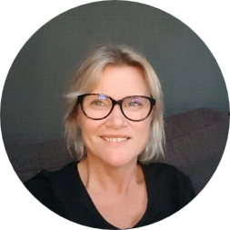

Hier vindt u alle informatie over het voorstel om in Bergen op Zoom tot een gemeentebreed ondernemersfonds te komen: de aanleiding, de opgaven voor Bergen op Zoom, hoe samenwerking op bedrijventerreinen, in het centrum en in het buitengebied eruit kan zien, en antwoorden op veelgestelde vragen.
Aanleiding
In Bergen op Zoom wordt onderzocht of een gemeentebreed ondernemersfonds wenselijk is. Een ondernemersfonds is een fonds vóór en dóór ondernemers en maatschappelijke organisaties (onderwijs, zorg, sport, cultuur). Het biedt een stabiele, langjarige financiële basis om samen te werken aan een sterker vestigingsklimaat. In meer dan vijftig Nederlandse gemeenten bestaat al zo'n fonds, onder meer in Helmond en Laarbeek.
Sinds februari 2026 werkt een brede initiatiefgroep van ondernemersverenigingen, bedrijventerreinen en maatschappelijke organisaties samen aan een voorstel. Inmiddels ligt er een uitgewerkt voorstel, met een advies aan de gemeenteraad om het fonds per 1 januari 2027 in te voeren. Het definitieve besluit valt naar verwachting in november/december 2026, bij de begrotingsbehandeling van de gemeenteraad.
Gedragen door de initiatiefgroep
In de initiatiefgroep zijn de bedrijventerreinen TNP, Oude Molen en LMM vertegenwoordigd, samen met ondernemersvereniging Sterck (binnenstad), MKB Bergen op Zoom, VNO-NCW Brabantse Wal, onderwijsinstelling Curio, ziekenhuis Bravis, Koninklijke Horeca Nederland afdeling Bergen op Zoom, de dorpswinkelcentra (via Winkelhart Halsteren) en individuele ondernemers. Sinds de start denken zij actief mee over het voorstel. Die betrokkenheid heeft geleid tot een groeiend enthousiasme: partijen die aanvankelijk terughoudend waren, zien inmiddels de meerwaarde van een fonds en pleiten zelf voor een voortvarende start. De initiatiefgroep moedigt ondernemers en organisaties in Bergen op Zoom aan om actief mee te denken.
Doel van deze website
Deze website is bedoeld om ondernemers, vastgoedeigenaren en maatschappelijke organisaties in Bergen op Zoom te informeren over het voorstel: waarom een ondernemersfonds, wat de belangrijkste opgaven zijn, hoe het fonds is opgebouwd en wat het voor u kan betekenen.
Deze website is een verlengstuk van de initiatiefgroep om informatie te delen en in contact te komen met ondernemers en vastgoedeigenaren. Heeft u een vraag die hier niet beantwoord wordt? Neem dan gerust contact op (zie colofon).
Op deze website
Gebruik de pagina's hieronder (of de navigatiebalk) om verder te lezen.
Bergen op Zoom: van industrieel verleden naar toekomstbestendige werkstad
Bergen op Zoom profileert zich als de plek van 'de makers van morgen'. Met bijna 30% van het bebouwde oppervlak bestemd als bedrijventerrein is de gemeente een echte werkstad, met een rijke industriële traditie in productie en logistiek. Toonaangevende multinationals zijn er gevestigd naast een breed en innovatief mkb, met de plant based economy als interessante speerpuntsector voor de toekomst.
Bergen op Zoom is niet de enige stad die zich als moderne industriestad heruitvindt: Eindhoven doet het met hightech, Leiden met life sciences, Helmond met automotive en foodtech, Terneuzen met chemie en biobased bedrijven. De moderne maakindustrie is een bron van lokale welvaartschepping: de toegevoegde waarde is hoog en er ontwikkelt zich vaak een keten van toeleveranciers in logistiek, handel, dienstverlening en horeca.
De economie groeit onvoldoende mee
De omvang van de economie drukken we uit in het aantal banen per 100 leden van de beroepsbevolking. Een score boven de 110 duidt op een duidelijke centrumfunctie, een score onder de 70 op een 'slaapstad'.
| Gemeente | Banen per 100 leden beroepsbevolking (2014) | Banen per 100 leden beroepsbevolking (2024) |
|---|---|---|
| Bergen op Zoom | 88 | 88 |
| Breda | 101 | 108 |
| Den Bosch | 113 | 127 |
| Eindhoven | 120 | 128 |
| Roosendaal | 93 | 100 |
| Tilburg | 91 | 98 |
| Terneuzen | 106 | 109 |
Bergen op Zoom is verre van een slaapstad (typische woongemeenten scoren tussen de 55 en 80), maar een score van 88 is ook niet indrukwekkend, zeker gezien het aantal hectaren bedrijventerrein. Zorgelijk is dat er, in tegenstelling tot vergelijkbare gemeenten, geen ontwikkeling in zit. De beroepsbevolking daalt bovendien richting 2040, wat de krapte op de arbeidsmarkt verder zal doen toenemen.
Een goed vestigingsklimaat is geen abstract begrip
Voor middelgrote steden wordt de concurrentie om talent en bedrijven alleen maar groter. Een goed vestigingsklimaat is een optelsom van concrete voorwaarden:
- Veilige, schone en aantrekkelijke bedrijventerreinen, toekomstbestendig ingericht met oog voor duurzaamheid, multimodale bereikbaarheid en uitstraling
- Collectieve oplossingen voor netcongestie: slimme energiehubs, collectieve opslag, piekmanagement
- Structurele samenwerking tussen bedrijfsleven en onderwijs: gezamenlijke onderwijsprogramma's, stage- en leerwerktrajecten
- Een aantrekkelijke stad en kernen: levendige centra, vitale wijken en een herkenbaar economisch profiel
Dit alles vraagt om structurele investeringen en gezamenlijke regie. Het ondernemersfonds maakt het mogelijk om als bedrijfsleven collectief te investeren in kwaliteit, samenwerking en innovatie: niet incidenteel, maar duurzaam en georganiseerd.
Zeven opgaven waar het fonds concreet verschil kan maken
De gesprekken met ondernemers en organisaties leveren een herkenbare lijst van opgaven op waar gezamenlijke aanpak en investering het verschil maken. Dit is geen dichtgetimmerd programma: het fonds is vraaggestuurd en initiatieven ontstaan vanuit de praktijk. Toch geeft het een goed beeld van waar de komende jaren winst te behalen valt.
Klik op een opgave om uit te klappen:
{{ item.num }} {{ item.title }}
{{ item.body }}
{{ item.example }}
Onderdeel van een bredere landelijke beweging
Bergen op Zoom staat hierin niet alleen. Door het hele land werken gemeenten en ondernemers aan het vergroten van de organisatiegraad en samenwerking op bedrijventerreinen. Het Rijk ondersteunt dit onder meer via de SPUK-regeling Bedrijfsmatig Vastgoed (Specifieke Uitkering), waarmee provincies aanjagers inzetten om de organisatiegraad op bedrijventerreinen te verhogen, als randvoorwaarde voor verduurzaming. Een ondernemersfonds sluit hier goed op aan: het biedt de structurele, langjarige financiering die nodig is om die organisatiegraad ook echt te verzilveren, en om aanspraak te kunnen maken op deze en andere cofinancieringsregelingen (provincie, Rijk, EU, netbeheerders).
Inmiddels kennen ruim vijftig Nederlandse gemeenten een ondernemersfonds, van grote steden (Utrecht, Groningen, Leeuwarden, Delft) tot kleinere gemeenten (Waddeneilanden, Laren, Uithoorn). In diverse Brabantse gemeenten loopt op dit moment een vergelijkbaar traject.

Eén fonds, maatwerk per gebied
Het ondernemersfonds is verdeeld over verschillende trekkingsgebieden. Binnen elk gebied bepalen ondernemers en maatschappelijke organisaties zelf hun doelstellingen en de besteding van hun budget. Zo doet het voorstel recht aan de diversiteit van de Bergse economie, zonder het fonds te versnipperen over te veel afzonderlijke potjes.
Voor Bergen op Zoom gaat het om zes werkgebieden: Gemeentebreed, Bedrijventerreinen, Centrum Bergen op Zoom, Stad & Samenleving, Halsteren en Buitengebied (incl. Lepelstraat). Voor de volledige toelichting per gebied en de bijbehorende budgetten kunt u contact opnemen (zie colofon).
Bedrijventerreinen: naar parksamenwerking
Bergen op Zoom kent drie grote bedrijventerreinen: TNP (Theodorushaven-Noordland-De Poort), LMM (Lage Meren-Meilust) en Oude Molen, plus de perifere detailhandelslocaties Geertruidapolder en Wouwseweg. In het voorstel worden deze samengebracht in één trekkingsgebied Bedrijventerreinen, met ruimte voor zowel gezamenlijke als terreinspecifieke agenda's.
Voor de bedrijventerreinen werken we dit uit langs de aanpak van parksamenwerking: de combinatie van parkbeheer (het dagelijks schoon, heel en veilig houden van het terrein) en parkontwikkeling (samenwerken aan strategische opgaven zoals energie, mobiliteit en arbeidsmarkt). Deze twee versterken elkaar: een goede dagelijkse basis maakt het mogelijk om ook de grotere, strategische opgaven gezamenlijk op te pakken.
We houden het hier bewust beknopt: parksamenwerking is één van de bouwstenen naast het centrum en het buitengebied. Een ondernemersfonds maakt parksamenwerking mogelijk door duurzame financiering: een team dat er echt voor gaat, een agenda voor de lange termijn en investeringen die renderen.
Centrum Bergen op Zoom
De binnenstad is al goed georganiseerd: ondernemersvereniging Sterck voert momenteel de BIZ Binnenstad uit. Het voorstel is dat deze overgaat in het ondernemersfonds, met een groter werkgebied (omdat wordt bijgedragen naar rato van de WOZ-waarde in plaats van een vast bedrag per object). Sterck steunt deze stap, onder de voorwaarde dat het huidige serviceniveau behouden blijft.
Stad & Samenleving, Halsteren en het buitengebied
Buiten de bedrijventerreinen en het centrum liggen er net zo goed kansen voor samenwerking: in de wijken en wijkwinkelcentra, in Halsteren en in het buitengebied (inclusief Lepelstraat). Ook hier gaat het om het verbinden van bedrijfsleven met onderwijs, zorg, sport en cultuur, en om het versterken van de organisatiegraad waar die nu nog beperkt is. Onderwijsinstelling Curio en ziekenhuis Bravis zijn vanaf een vroeg stadium bij de initiatiefgroep aangesloten.
Cross-sectorale kansen: samenwerken over de grenzen van gebieden en sectoren heen
Trekkingsgebieden geven ieder gebied een eigen budget en eigen zeggenschap. Juist de dwarsverbanden tussen sectoren en gebieden kunnen veel meerwaarde leveren. Dit is precies waarvoor het gemeentebrede aandeel (10% van het fonds) is bedoeld: initiatieven die één gebied overstijgen. Een paar voorbeelden van waar dat toe kan leiden:
Klik op een dwarsverband om uit te klappen:
{{ item.title }}
{{ item.body }}
{{ item.example }}
Dit zijn voorbeelden ter inspiratie, geen vaststaand programma: het fonds is vraaggestuurd, en het zijn de ondernemers en organisaties zelf die bepalen welke gebiedsoverstijgende initiatieven zij oppakken.

Hier vindt u antwoord op veelgestelde vragen over het in voorbereiding zijnde gemeentebrede Ondernemersfonds in Bergen op Zoom. Transparantie staat voorop: deze pagina wordt voortdurend aangevuld met nieuwe vragen die we ophalen uit gesprekken met ondernemers, ondernemersverenigingen en maatschappelijke partners.
Over het fonds
Wat is een gemeentebreed ondernemersfonds?
Een gemeentebreed ondernemersfonds is een fonds dat door en voor ondernemers wordt beheerd via een onafhankelijke stichting. Vanuit dit fonds kunnen ondernemers gezamenlijk investeren in het gemeenschappelijk belang. Denk aan een bedrijventerrein, een dorpscentrum, de wijkeconomie, het buitengebied of gemeentebrede thema's. Het fonds biedt een vrije financiële positie in handen van ondernemers en lokale organisaties: zij bepalen zelf waaraan het geld wordt besteed.
In Nederland werken inmiddels ruim 50 gemeenten met een dergelijk fonds, van groot (Utrecht, Groningen, Leeuwarden) tot klein (Waddeneilanden). In Brabant zijn er onder andere fondsen in Helmond, Deurne, Laarbeek en Gorinchem.
Waarom een ondernemersfonds in Bergen op Zoom?
Lokale ondernemers krijgen met steeds meer uitdagingen te maken: verduurzaming en energietransitie, netcongestie, arbeidsmarkt en aansluiting met onderwijs, bereikbaarheid, veiligheid en de uitstraling van bedrijventerreinen en centra. Dit zijn opgaven die ondernemers niet alleen kunnen oplossen en die om collectieve slagkracht vragen.
Specifiek voor Bergen op Zoom signaleren we knelpunten op het gebied van veiligheid, samenwerking en uitstraling, met name op bedrijventerrein TNP. De organisatiegraad is op verschillende plekken laag, collectieve voorzieningen komen moeilijk tot stand en het risico op verloedering neemt toe. Met een ondernemersfonds:
- ontstaat een vast, langjarig investeringsbudget voor gebiedsambities én gemeentebrede thema's;
- krijgt de organisatiegraad een boost en wordt belangenbehartiging professioneler;
- krijgt de gemeente een sterkere gesprekspartner met meer slagkracht;
- ontstaat een hefboom om externe cofinanciering aan te trekken (provincie, Rijk, EU, netbeheerders);
- komt er een einde aan 'freeriders': iedere ondernemer betaalt naar rato mee en kan meebepalen.
Hoe wordt het ondernemersfonds gefinancierd?
Ondernemers brengen het geld zelf op via een kleine opslag op de OZB voor niet-woningen. Eigenaren en gebruikers van een zakelijk object investeren gezamenlijk een bedrag per € 100.000 WOZ-waarde. De bijdrage wordt verdeeld tussen eigenaar (56%) en gebruiker (44%).
De gemeente int de opslag via de reguliere OZB-aanslag en zet de meeropbrengst één-op-één door naar de onafhankelijke Stichting Ondernemersfonds Bergen op Zoom. Alle betalers van OZB niet-woningen doen mee. Behalve bedrijven zijn dat bijvoorbeeld ook scholen, sportgebouwen, cultuurvastgoed en zorglocaties.
Welk tarief wordt voor Bergen op Zoom voorzien?
Geadviseerd wordt om te werken met een vast tarief van € 60 per € 100.000 WOZ-waarde. De bijdrage wordt verdeeld tussen eigenaar (56%) en gebruiker (44%).
Bij dit tarief wordt de fondsomvang voor Bergen op Zoom geschat op circa € 1.112.000 per jaar, waarvan 10% (± € 111.000) gereserveerd is voor gemeentebrede initiatieven. Het exacte bedrag hangt af van de definitieve WOZ-waarden en het besluit van de gemeenteraad.
Wat zou ik als ondernemer per jaar bijdragen? (rekenvoorbeeld)
Uitgaande van het voorgestelde tarief van € 60 per € 100.000 WOZ-waarde, met een verdeling 56% eigenaar / 44% gebruiker:
| Situatie (WOZ € 300.000) | Bijdrage per jaar |
|---|---|
| Gebruiker / huurder | € 79,- |
| Eigenaar | € 101,- |
| Eigenaar én gebruiker | € 180,- |
De ervaring uit andere fondsen leert dat de individuele draaglast overzichtelijk blijft en niet leidt tot een merkbare aanpassing van de algehele kostenstructuur van een bedrijf. Tegelijkertijd is er sprake van een substantiële opbrengst voor het collectief.
Bestedingen
Waaraan kan het geld worden besteed?
Het fonds is een 'regelvrije ruimte' met volkomen bestedingsvrijheid voor ondernemers. Alles wat binnen het collectief tot gezamenlijk belang wordt benoemd komt voor financiering in aanmerking. Voorbeelden uit andere gemeenten:
- Energietransitie / netcongestie: onderzoek naar energyhubs, collectieve energiecontracten, kennisuitwisseling
- Veiligheid: surveillance, alarmopvolging, KVO, camerabewaking, aanpak ondermijning
- Sfeer en beleving: evenementen, profilering centrum en winkelgebieden, sfeerverlichting, regiopositionering
- Park- en centrummanagement: belangenbehartiging, schoon/heel/veilig, overleg met de gemeente
- Verduurzaming: vergroening, circulaire initiatieven, zero-emissie stadslogistiek, waterberging, klimaatadaptatie
- Arbeidsmarkt: open bedrijvendagen, techniekroutes, stagemarkten, samenwerking met onderwijs
- Buitengebied / landbouw: promotie, verbrede landbouw, afval- en wateroplossingen, eigen visieontwikkeling
In de meeste fondsen ontwikkelen de bestedingen zich over de tijd van praktische voorzieningen op korte termijn naar visiegedreven, structurele investeringen met cofinanciering.
Hoe doe ik een beroep op het fonds?
Het fonds gaat naar verwachting werken met trekkingsrechten: ieder gebied beschikt over een gezamenlijk investeringsbudget naar rato van de eigen inleg in het fonds. De ondernemers in het gebied besluiten zelf gezamenlijk over de bestedingen. Als u een plan heeft, meldt u zich bij het collectief in uw gebied.
Voor gemeentebrede initiatieven wordt een vast aandeel in het fonds gereserveerd. Initiatieven met een gebiedsoverstijgend karakter kunnen via één van de collectieven worden ingediend.
De definitieve aanvraagprocedure en de exacte trekkingsgebieden voor Bergen op Zoom worden in de huidige verkenningsfase samen met de initiatiefgroep uitgewerkt.
Welke trekkingsgebieden zijn voorzien in Bergen op Zoom?
Voorgesteld worden zes trekkingsgebieden (werkgebieden):
- Gemeentebreed (10% van het fonds, ± € 111.000)
- Bedrijventerreinen: TNP, Lage Meren-Meilust (LMM), Oude Molen, Geertruidapolder en Wouwseweg samen, ± € 513.000, met een voorstel voor een gezamenlijke Stichting Parksamenwerking Bergen op Zoom
- Centrum Bergen op Zoom: opvolger van de huidige BIZ (via Sterck), ± € 174.000
- Stad & Samenleving: de wijken, wijkwinkelcentra, onderwijs, zorg, sport en cultuur, ± € 185.000
- Halsteren: eigen trekkingsrecht voor het dorpscentrum, ± € 47.000
- Buitengebied incl. Lepelstraat: agrarische bedrijven, recreatie en verspreide bedrijvigheid, ± € 77.000
De exacte grenzen liggen nog niet definitief vast en kunnen bij de verdere uitwerking op onderdelen wijzigen.
Hoe werken de drie bedrijventerreinen straks samen?
TNP, Lage Meren-Meilust (LMM) en Oude Molen vormen samen het trekkingsgebied Bedrijventerreinen. Voorgesteld wordt om de bedrijventerreinverenigingen te bundelen in een Stichting Parksamenwerking Bergen op Zoom, die het dagelijkse parkbeheer (schoon, heel, veilig) combineert met parkontwikkeling: gezamenlijk optrekken op strategische opgaven zoals beveiliging, ondermijning, truckparking en de samenwerking met onderwijs. Elk terrein behoudt daarnaast een eigen agenda voor terreinspecifieke zaken zoals bewegwijzering en groenonderhoud.
Wat betekent dit voor het buitengebied en Lepelstraat?
Het buitengebied (inclusief Lepelstraat) kent een grote diversiteit aan bedrijvigheid, van agrarische bedrijven tot recreatie en toerisme, en is nu nog beperkt gezamenlijk georganiseerd. Er is contact gezocht met HISWA-RECRON en ZLTO, maar dit heeft nog niet geleid tot een gezamenlijke vertegenwoordiging. Een eigen trekkingsrecht voor het buitengebied kan hier, net als in Deurne (waar Stichting Buitengebied Deurne inmiddels ondernemers uit verschillende sectoren verbindt), een impuls geven aan de organisatiegraad.
Kan er gespaard worden binnen het fonds?
Ja. Het trekkingsrecht van een gebied blijft ter beschikking staan aan het collectief ter plaatse. En zolang er nog geen collectief is, blijft het trekkingsrecht voor het gebied gereserveerd. Er kan dus gespaard worden voor grotere investeringen. Oneindig oppotten is niet de bedoeling; bij langdurig onbenut trekkingsrecht zoekt het bestuur het gesprek met de trekkingsgerechtigde om te bespreken hoe het fonds beter kan worden gebruikt.
Organisatie en zeggenschap
Wie beheert het geld?
Een onafhankelijke stichting, de Stichting Ondernemersfonds Bergen op Zoom, beheert het geld in één kas. Het bestuur bestaat uit ondernemers met een netwerk in ondernemend Bergen op Zoom en gevoel voor de lokale economie. Het bestuur heeft ten minste vier taken:
- Financieel beheer: deugdelijke inrichting van het fonds, administratieve verwerking van aanvragen en toezicht op rechtmatigheid.
- Ondersteunen van collectieven: informatievoorziening, kennisoverdracht en ondersteuning van initiatiefnemers.
- Stimuleren van organisatie: in nog ongeorganiseerde gebieden, met inspiratie uit andere fondsen.
- Verantwoording: contact met de gemeente en jaarverslagen.
Wat is de rol van de gemeente?
De verhouding tussen het fonds en de gemeente wordt vastgelegd in een convenant met twee principiële uitgangspunten:
- Non-interventiebeginsel: de gemeente onthoudt zich van politieke beïnvloeding van het fonds. Ondernemers bepalen zelf waaraan het geld wordt besteed.
- Non-substitutiebeginsel: de gemeente blijft verantwoordelijk voor publieke taken. De komst van het fonds is geen aanleiding om publieke verantwoordelijkheden af te wentelen op het fonds.
De gemeente is zelf ook eigenaar en gebruiker van zakelijk vastgoed en betaalt via die weg mee aan het fonds. Ook hier geldt: meebetalen, maar niet meebeslissen.
Wie controleert het bestuur?
Naast het bestuur komt er een adviesraad: een representatieve afvaardiging van de verschillende groepen ondernemers en maatschappelijke organisaties die meebetalen. Het bestuur legt jaarlijks verantwoording af aan de adviesraad. Daarnaast verschijnt er jaarlijks een jaarverslag met accountantsverklaring richting de gemeente, aangezien het fonds met publiek geïnde middelen wordt gevoed.
Hoe groot is de overhead van het fonds?
Landelijk is de vuistregel dat circa 6% van een ondernemersfonds nodig is voor centrale kosten: technische inrichting, communicatie en website, accountantscontrole en secretariaat. In Bergen op Zoom wordt hiervoor het gemeentebrede aandeel van 10% (± € 111.000) gebruikt: een deel dekt deze vaste kosten en professionele ondersteuning (bijvoorbeeld een fondsmanager), en het resterende deel is bedoeld voor grotere, gebiedsoverstijgende initiatieven. In het opstartjaar kunnen de kosten tijdelijk hoger liggen door eenmalige zaken zoals de oprichting van de stichting en de opzet van de website en boekhouding.
Maatschappelijke partijen
Wat is de positie van onderwijs, zorg, cultuur en sport?
Maatschappelijk vastgoed doet ook mee in het fonds; non-profitorganisaties worden van harte uitgenodigd om actief te zijn binnen het fonds. De ervaring elders is dat zij vaak actieve gebruikers zijn: ze hebben belang bij veiligheid, uitstraling, beheer, promotie en activiteiten, én brengen specifieke belangen in:
- Onderwijs heeft baat bij contact met bedrijfsleven over stageplekken, bedrijfsbezoeken en aansluiting onderwijs-arbeidsmarkt.
- Sport en cultuur trekken vaak op met bedrijven rond sponsoring, marketing en gezamenlijke activiteiten.
- Zorgorganisaties zoeken kansen op het gebied van preventie en het verbinden van cliënten en bewoners met de maatschappij.
Voor Bergen op Zoom zijn onder andere onderwijsinstelling Curio en ziekenhuis Bravis al bij de initiatiefgroep aangehaakt.
Wat gebeurt er met de bestaande BIZ Binnenstad?
In Bergen op Zoom voert ondernemersvereniging Sterck momenteel de BIZ Binnenstad uit. Het voorstel is dat deze overgaat in het ondernemersfonds: het werkgebied van het trekkingsgebied Centrum wordt daarbij groter dan het huidige BIZ-gebied, omdat de bijdrage voortaan naar rato van de WOZ-waarde wordt geheven in plaats van een vast bedrag per object. Sterck ondersteunt deze uitbreiding, onder de voorwaarde dat het huidige serviceniveau behouden blijft; gemeente en Sterck bekijken samen hoe dit het beste kan worden geborgd. Een belangrijk uitgangspunt is dat ondernemers niet dubbel betalen.
Het proces in Bergen op Zoom
Waar staan we nu in Bergen op Zoom?
In de raadsbegroting 2026 is opgenomen dat de gemeente toewerkt naar een raadsvoorstel voor invoering van een gemeentebreed ondernemersfonds per 1 januari 2027, mits er voldoende draagvlak bestaat. Sinds de aftrapbijeenkomst op 5 februari 2026 in het Delta Agrifood Business Lab zijn drie bijeenkomsten van de initiatiefgroep gehouden; een vierde bijeenkomst staat gepland op 21 september 2026.
Er ligt inmiddels een inhoudelijk uitgewerkt voorstel, met een advies aan de gemeenteraad om het fonds in te voeren. Na bespreking met de initiatiefgroep en verdere communicatie richting ondernemers en organisaties wordt het voorstel naar verwachting in november/december 2026 ter besluitvorming aan de gemeenteraad voorgelegd, bij het vaststellen van de OZB-tarieven.
Wat is het advies aan de gemeenteraad?
Het advies is om het Ondernemersfonds Bergen op Zoom in te voeren. Dit advies is gebaseerd op een duidelijke economische en maatschappelijke meerwaarde, een breed gedragen inhoudelijk fundament (gebiedsindeling, governance en financiële systematiek zijn uitgewerkt in overleg met de initiatiefgroep), een uitvoerbare financiële en organisatorische basis, en groeiend draagvlak gedurende het traject. De resterende aandachtspunten liggen vooral in de verdere uitwerking van de governance en de praktische samenwerking, en staan de besluitvorming niet in de weg.
Welke partijen zijn betrokken bij de initiatiefgroep?
In de initiatiefgroep zijn vertegenwoordigd:
- De bedrijventerreinen TNP, Oude Molen en LMM
- Individuele ondernemers
- Ondernemersvereniging STERCK Binnenstad
- MKB Bergen op Zoom
- VNO-NCW Brabantse Wal
- Onderwijsinstelling Curio
- Koninklijke Horeca Nederland afdeling Bergen op Zoom
- Horeca in binnenstad en buitengebied
- Ziekenhuis Bravis
- Dorpswinkelcentra (via voorzitter Winkelhart Halsteren)
De groep wordt waar nodig nog aangevuld met partijen uit onder meer sport, cultuur, zorg en landbouw, zodat een zo representatief mogelijk beeld ontstaat van ondernemend Bergen op Zoom. Voor het buitengebied is inmiddels contact gezocht met HISWA-RECRON en ZLTO; dit heeft nog niet geleid tot een gezamenlijke vertegenwoordiging, maar de komst van het fonds kan hier juist een impuls aan geven.
Welke partijen staan al positief tegenover het initiatief?
Het draagvlak is de afgelopen periode gegroeid. VNO-NCW Brabantse Wal en MKB Bergen op Zoom zijn nadrukkelijk voorstander. De besturen van de drie bedrijventerreinverenigingen (TNP, LMM en Oude Molen) zien inmiddels de meerwaarde en pleiten zelfs voor een directe start met het volledige tarief van € 60. Ondernemersvereniging Sterck (binnenstad) is voorstander, mits het huidige serviceniveau van de BIZ behouden blijft. Ook de winkeliersvereniging van Halsteren, aanvankelijk terughoudend, is inmiddels voorstander. Onderwijsinstelling Curio en ziekenhuis Bravis zijn vanaf een vroeg stadium aangesloten. Enkele partijen zijn kritisch over het proces; deze signalen worden meegenomen in de verdere uitwerking.
Wat is de rol van Blaauwberg?
Adviesbureau Blaauwberg uit Leiden begeleidt de verkenning. Blaauwberg heeft ruime ervaring met de begeleiding van ondernemersfondsen in tientallen Nederlandse gemeenten, waaronder Helmond, Deurne, Leiden, Delft en Leeuwarden. Het bureau brengt landelijke praktijkervaring in en helpt bij gesprekken, draagvlakopbouw, het uitwerken van de startnotitie en de inhoudelijke vormgeving van het fonds.
Zijn er al voorbeelden van bestaande ondernemersfondsen?
Ja, in Nederland werken inmiddels ruim vijftig gemeenten met een ondernemersfonds, van grote steden tot kleine gemeenten. Een paar voorbeelden met een eigen website waar u de werkwijze en projecten kunt bekijken:
- Ondernemersfonds Helmond
- Ondernemersfonds Laarbeek
- Ondernemersfonds Gemeente Deurne
- Ondernemersfonds Utrecht
Deze fondsen laten zien hoe een gemeentebreed fonds er in de praktijk uitziet: van trekkingsgebieden en tarieven tot concrete projecten.
Wat voor concrete projecten worden er in andere gemeenten van het fonds betaald?
Ondernemersfondsen financieren een grote diversiteit aan projecten, van klein en praktisch tot groot en strategisch. Een paar concrete voorbeelden per soort initiatief:
- Maatschappelijke initiatieven: Ondernemersfonds Delft financierde een Science Day en de verduurzaming van Sportpark Tanthof Zuid; Ondernemersfonds Utrecht ondersteunt onder meer de jaarlijkse Utrecht Science Week.
- Gebieds- en sectoroverstijgende initiatieven: Ondernemersfonds Dordrecht investeerde in het project 'Werken aan biodiversiteit' en een uitleendienst voor e-bikes; Ondernemersfonds Utrecht financiert onder meer de Impact Fair, die sociaal ondernemerschap verbindt met het lokale bedrijfsleven.
- Bedrijventerreinen: Ondernemersfonds Helmond maakt met 'Smart Synergy' kennisdeling tussen bedrijven mogelijk; Ondernemersfonds Laarbeek financiert structureel parkmanagement en een jaarlijkse open bedrijvendag; Ondernemersfonds Delft maakt collectieve inkoop van zonnepanelen mogelijk.
- Centra en wijken: Ondernemersfonds Dordrecht organiseert het evenement 'Dordrecht pakt uit'; Ondernemersfonds Laarbeek financiert de lichtjesactie 'Ondernemers in het licht' in de winkelgebieden.
- Buitengebied: Ondernemersfonds Gemeente Deurne ondersteunt onder meer Project Groen Gas en de jaarlijkse Boerderijdag, en publiceert de reeks 'Buitengebied in Beeld' waarin ondernemers uit het buitengebied aan het woord komen.
Deze voorbeelden laten zien hoe breed de bestedingsvrijheid in de praktijk wordt ingevuld: van feestverlichting tot energietransitie, en van een enkel evenement tot structurele samenwerking.
Wat is het vervolg?
De routing van een fonds verloopt doorgaans in drie fasen, met telkens een go/no-go-moment:
- Oriëntatie: vorming van de initiatiefgroep, contour van het fonds, eerste gesprekken (afgerond).
- Verbreed en verdiepend onderzoek: uitwerken van een inhoudelijk voorstel en ophalen van draagvlak (afgerond/lopend).
- Politieke besluitvorming en implementatie: besluit door de gemeenteraad, installatie van het bestuur, inrichting van het fonds (aanstaande).
Het voorstel wordt eerst besproken met de initiatiefgroep; de uitkomsten hiervan worden verwerkt in de definitieve versie. Daarna communiceren de initiatiefgroep en de gemeente breed over het voorstel. De gemeenteraad kan een ondernemersfonds alleen invoeren bij het vaststellen van de OZB-tarieven, wat jaarlijks gebeurt in de begrotingsvergadering (november/december). Bij een positief besluit kan het fonds per 1 januari 2027 van start gaan. Daarna volgen nog enkele praktische stappen: het oprichten van de Stichting Ondernemersfonds Bergen op Zoom (met bestuur), het opstellen van een convenant tussen gemeente en stichting, het oprichten van de adviesraad, en het verder uitwerken van de samenwerking tussen de trekkingsgebieden en de gemeentebrede organisatie.
Hoe kan ik meedenken of meepraten?
Iedere ondernemer en maatschappelijke organisatie in Bergen op Zoom is welkom om mee te denken. Dat kan via uw eigen ondernemersvereniging of gebiedscollectief, via een lid van de initiatiefgroep, of door rechtstreeks contact op te nemen met de gemeente of met Blaauwberg. Heeft u een vraag die nog niet op deze pagina staat? Laat het ons weten via de contactgegevens in het colofon. We vullen de Q&A aan met nieuwe vragen die binnenkomen.
Deze Q&A wordt regelmatig bijgewerkt naarmate de verkenning vordert. Laatste update: 15 september 2026.

Meer weten of gewoon even sparren?
Deze website wordt onderhouden door de initiatiefgroep Ondernemersfonds Bergen op Zoom, met ondersteuning vanuit gemeente Bergen op Zoom, adviesbureau Blaauwberg en CCE Co-creatie. Heeft u vragen, opmerkingen of wilt u meedenken? Neem gerust contact op:

Claudia Bezembinder
Programmamanager Grote Oogst en Adviseur Economie, Gemeente Bergen op Zoom
c.m.bezembinder@bergenopzoom.nlNeem gerust contact op met Claudia Bezembinder of Rob Bogman
Foto's Grote Markt en skyline Bergen op Zoom: Wikimedia Commons (CC BY 4.0 / CC BY-SA 4.0), foto's van G. Lanting en andere Commons-bijdragers.
Beeldmateriaal © Google, Street View
Deze website is ontwikkeld door CCE Co-creatie, in opdracht van de initiatiefgroep Ondernemersfonds Bergen op Zoom en gemeente Bergen op Zoom (2026)
Wilt u meer weten over wat het fonds voor uw gebied kan betekenen? Neem contact op.
Contact